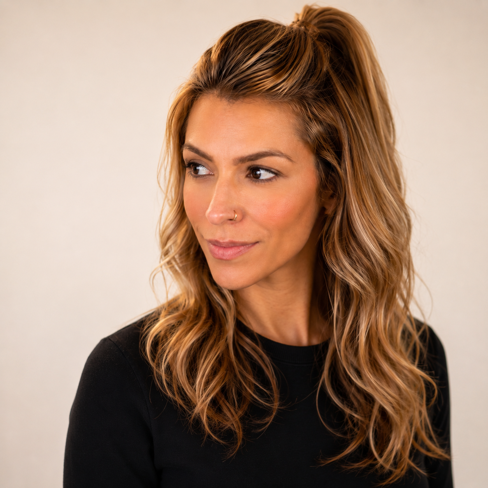

Find clarity. Lead yourself forward.
Grounded coaching for transitions, leadership, and meaningful growth.

Certified Coach and EQ-i 2.0® and EQ 360® Practitioner. I partner with people through transition, leadership, and personal growth.
Client reflections
What shifts when the work gets grounded.
“I came into coaching feeling overwhelmed and stuck. Juliana helped me to understand my reactions, my needs, and how to lead myself through hard moments. This changed the way I relate to myself.”Maya R., Ottawa, ON
“Juliana is helping me to slow down, reconnect with myself, and make decisions from a grounded place instead of distress. I feel more confident, more centered, and more like myself.”Sofia M., Toronto, ON
“For the first time in years, I understood what was driving my patterns and felt equipped to change them. Every session felt supportive, calm, and surprisingly transformative.”Amelia C., Vancouver, BC
“This experience helped me untangle long-standing patterns and step into a stronger, clearer version of myself. Juliana holds space in a way that feels steady and safe, as she calls it brave space.”Nadia L., Montreal, QC
Tap to see the next reflection